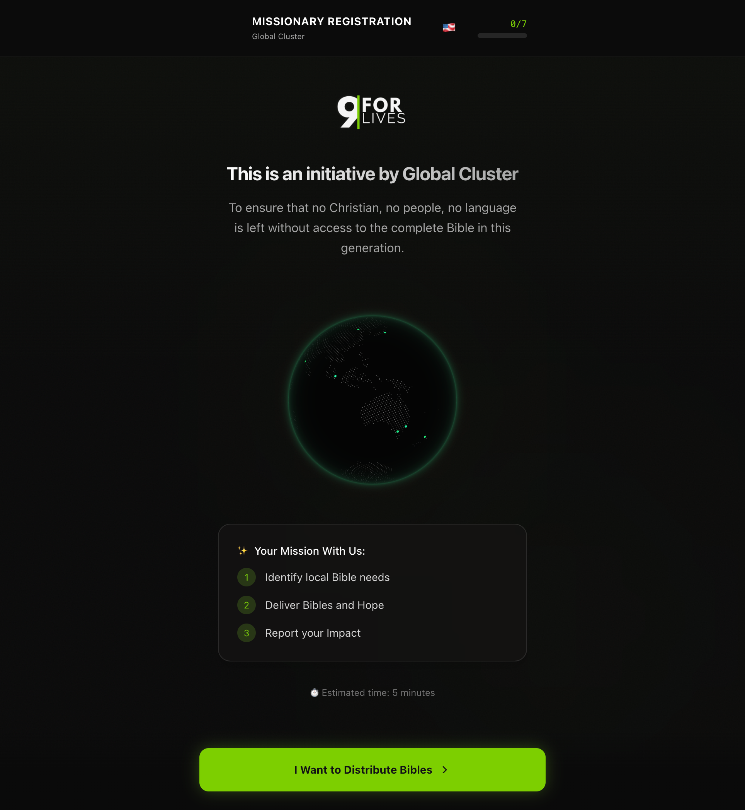
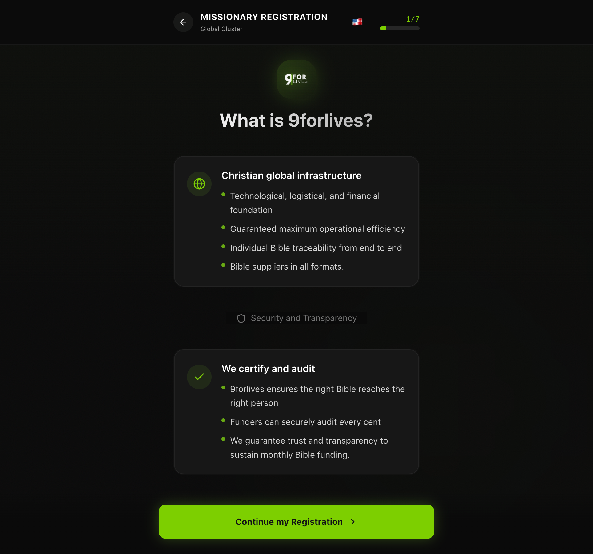
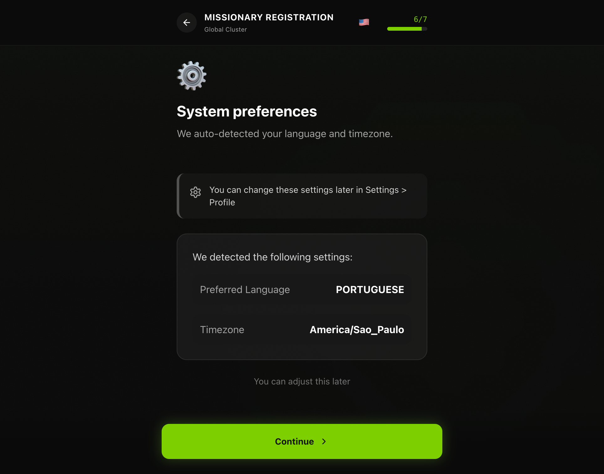

New Missionary Registration Playbook
Official guide for the complete onboarding process of missionaries on the 9forLives platform.
What We Expect from the Missionary
The 9forLives missionary is a transformational agent committed to the mission of impacting lives through technology and the Word.
Commitment
Sincere dedication to organizational objectives.
Integrity
Honesty in all operations and records.
Resilience
Firmness in the face of field challenges.
Registration Flow
The registration form is structured in 8 main stages that collect progressive information.
Welcome
Introduction to 9forLives vision.
Personal Data
Identity and access.
Location
Where Bibles will be delivered.
Affiliation
Connection with the faith community.
Purpose
Your motivation and interest areas.
Preferences
Automatic system settings.
Documents
Identity validation.
Conclusion
Account activation.
Form Details
The first screen presents the 9forLives vision. It is the moment for spiritual and operational alignment.
What to do
Read the commitment terms and the system introduction carefully.
Why it matters
Ensures all missionaries are on the same page regarding the organization's values.

Creating your digital identity on the platform. This data will be used for all your official communication.
- Full Name: Must be identical to your official document.
- Email: Use an email you access daily; it will be your login.
- WhatsApp: Essential for rapid logistics coordination.
- Password: Create a strong password (minimum 8 characters) and keep it secure.

Critical Rule: The Logistics Hub
The address registered here is where the funded Bibles will be sent. It must be a secure location with someone available to receive during business hours.
The system uses your ZIP code to automatically calculate routes and delivery times for donors.

9forLives works in partnership with the body of Christ. We need to understand your connection with the local church.
Provide the name of your denomination, the name of your direct pastor/leader, and a reference contact. This is part of our compliance and spiritual security process.

Define your field of action. Where do you intend to focus your evangelism efforts?
Geographic Focus
Indicate the specific neighborhoods or regions where you already have active work.
Motivation
A brief account of why you want to be a 9forLives missionary.

Configure how the system should behave for you.
You can set language preferences, email notifications, and how you want to view pending requests on your dashboard.

To ensure the integrity of the network, we validate the identity of all agents.
Accepted Documents
ID Card, Driver's License, or Passport. The photo must be clear and all data legible. Expired or illegible documents will cause delays in approval.

Your registration has been submitted for review by our moderation team.
What happens now?
1. Our team will review your data and documents (average time: 48h).
2. You will receive a confirmation email as soon as you are approved.
3. After approval, your dashboard will be released to register beneficiaries.

The Missionary Dashboard
After approval, you will have access to your operational command center.
Life Management
Register beneficiaries and track each one's status.
Logistics
Track Bible shipments to your base.
Pre-Mission Checklist
- Registration 100% complete
- Documents uploaded and validated
- Logistics address confirmed